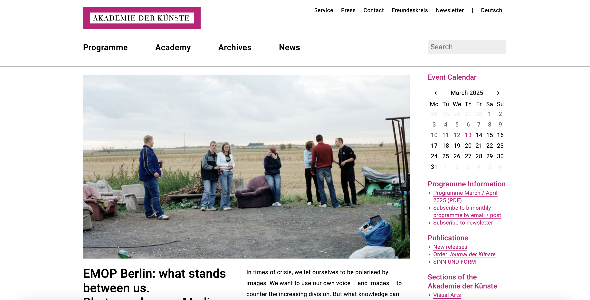
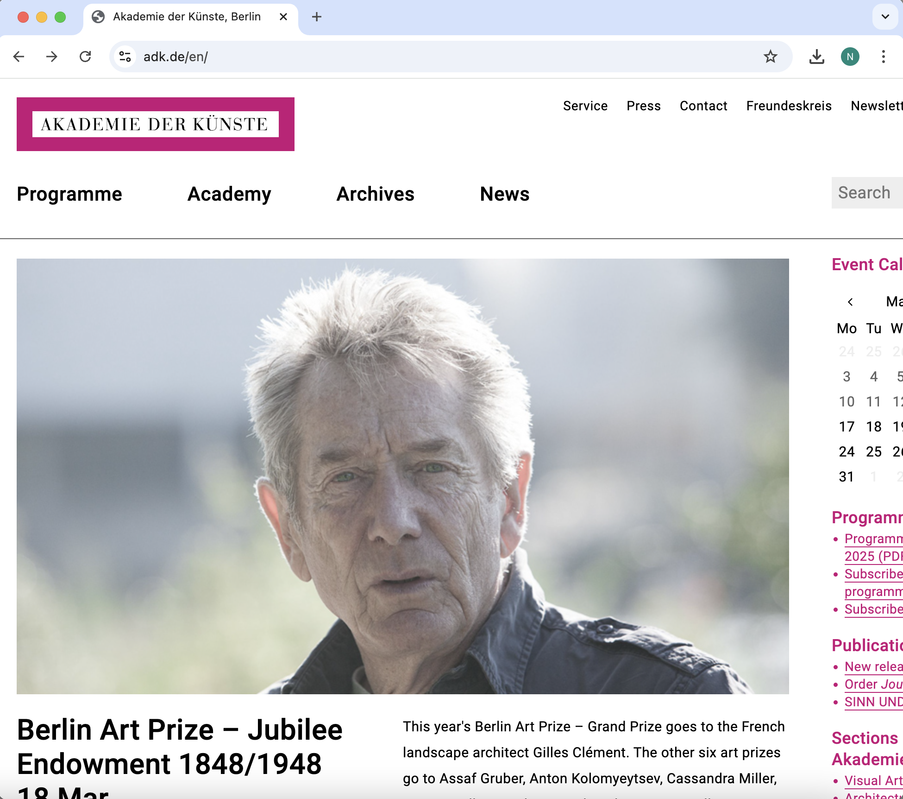

In this project I wanted to work on redesigning a website to adjust to different screen sizes
I chose to redesign the website of Akademie Der Kunste, Berlin.
because this is one of my favorite museums and
I have encountered difficulties when using the webpage as a user in the past.
Navigating through the site on a mobile device is clunky as the interface is far too small, while presenting an overwhelming amount of information
on the homepage. I have struggled to use this website on the go when planning a museum trip as well as navigating to my desired information.
Full Screen on Laptop

Half Screen on Laptop

Smaller Window Sizes
Analyzing Usability of Webpage
Efficiency
The navigation speed of menus, links, and search function is quick and responsive. However it is unclear
sometimes which elements link to other pages and which ones do not.
Shortcuts to navigate to relevant pages (e.g. current exhibitions) through the changing image gallery.
Unnecessary steps present in the front web page navigation as different parts point towards navigating to another page.
No keyboard shortcuts – this is both an efficiency and accessibility issue.
No autofill feature in the search function.
Learnability
There are not many icons on the website.
In the case of this being an art museum website, this makes sense though most information is accompanied
by posters/images which makes it easier to understand what this navigates to.
Page is quite cluttered with information which can make it actually harder to find what users may be
lookin for initially.
The top of the page highlights most recent/ongoing exhibitions and events.
However as you scroll down you see any events that are coming up in the next few days and their descriptions.
This is confusing in conjunction with the small calendar on the right hand side bar.
There is consistency with styling but to the point where there is a lack of contrast.
Hard to distinguish what is most important and/or can be clicked on to navigate to other pages.
Similar color scheme throughout and pink accent color,
but lack of buttons that might signify to first time users how to navigate.
Memorability
The page is structured in a familiar way with the navigation bar at the top and the search function in the top right corner.
There are almost what it seems to be: 3 sets of navigation bars
The only way to navigate back to the homepage is to click on the museum’s logo however this is not very intuitive.
Lack of change in type of navigation for when adjusting screen sizes and on mobile versions (e.g. navbar or hamburger icon)
Links are not always labelled in a clear way as multiple underlined areas and buttons lead to the same next page.
There should be a consistent format to guide users in the navigation patterns.
Site has a distinct style with its color combination and the minimal nature but needs improvement.
It is important to note that it should remain minimal since they present many artist’s work and posters on their site
and this could sometimes clash. However right now it is so minimal it lacks user-friendliness
Image without alternative text results in an empty link.
Missing form label – form controls are missing some corresponding labels
I agree with the problems detected, though these are hard to catch at first without screen reader use.
Text is very small
Text which is very small is difficult to read, particularly for those with low vision.
Specifically highlights which text is sized 10 pixels or smaller.
This particularly is of large concern on this webpage as there is a lot of information on the opening page.
This results in really small labelling and text overcrowding in certain areas.
Low contrast between text & background colors
Adequate contrast of text is necessary for all users, especially users with low vision.
The particular problem is that smaller text (18px and below) requires more contrast between the foreground (text)
and background color (mainly white on the homepage).
Visual Design Guide of Redesign
To start my redesign process, I created a visual design style guide that displays the main colors, typography,
and reusable components’ different states (buttons on hover, click):